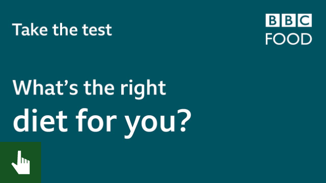

On What's The Right Diet For You? A Horizon Special, we profiled 75 people
to understand why they had problems losing weight.
Medical and nutritional experts tested their hormones, genes and attitudes
towards food,
categorising them into three groups:
Constant Cravers, Feasters and Emotional Eaters.
Our experts then gave each group a different diet to follow, using a
scientific approach to weight loss.
This test will indicate whether you may be in one of the groups.
It is not a substitute for tests performed in the experiment but it is a
useful guide that you can use at home.
Answer the 12 simple questions about your eating habits to find your ideal dieting style.
